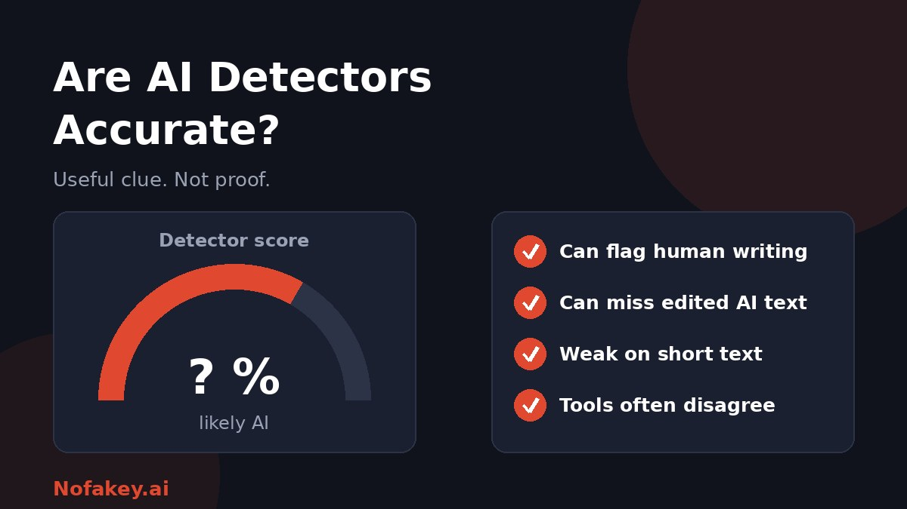

A student is accused of using AI. A freelancer's article is rejected. A manager runs a report through a checker and gets "82% AI." In each case, someone is treating a detector's number as a fact. So are AI detectors accurate enough for that? This guide explains what they do, where they fail, and how to use them fairly.
How AI detectors work
Most text detectors do not know who wrote something. They measure patterns, such as how predictable the word choices are and how much sentence length varies, and compare them with patterns typical of AI output. The result is usually a likelihood score, not a yes or no.
That is the key limit: detectors score resemblance, not origin. A hidden signal built in by the generator is a different method. We cover it in our guide to AI watermark detection.
So, how accurate are they?
It depends on the tool, the text and how it was edited. Tests run by detector vendors often look impressive, but they are usually done on clean samples of raw AI output against typical human writing. Real life is messier. Independent checks tend to find lower and more uneven results, and many sources that rank detectors are published by companies that sell them, so read headline accuracy claims carefully.
| Situation | What usually happens |
|---|---|
| Long, raw AI output | Detectors tend to do best here |
| AI text lightly edited or paraphrased | Detection often drops, and results vary widely |
| Short text (a few sentences) | Unreliable, since there are too few patterns to measure |
| Clear, formal human writing | Can be wrongly flagged as AI |
| Writing by non-native English speakers | Research has found a higher risk of false flags |
| Code, lists, templates and factual text | Hard to judge, since few wording choices exist |
Why detectors get it wrong
False positives: human work flagged as AI
- Good writing looks "predictable." Plain, tidy, well-structured prose can match the patterns detectors associate with AI.
- Grammar and style tools smooth text in ways a detector may read as machine-made.
- Training bias. Detectors learn from sample data, so writers who differ from that sample can be misjudged.
False negatives: AI work that slips through
- Editing and rewriting reduce the patterns detectors look for.
- Paraphrasing and "humanizer" tools are built to evade detection.
- New AI models can write in ways older detectors were not trained on.
Why two tools can disagree
Each detector uses different methods, training data and thresholds. The same paragraph can get a high score in one and a low score in another. Disagreement is itself a sign not to lean on any single number.
What a score like "80% AI" really means
It does not mean there is an 80% chance a machine wrote it. It usually means the text resembles patterns the detector links with AI. It also does not tell you how AI was used. Brainstorming, grammar help and full generation can all look similar to a detector.
How to use AI detectors responsibly
- Treat the score as a clue, never as proof or the only evidence.
- Check enough text. Do not judge a sentence or a short paragraph.
- Compare more than one signal: drafts, version history, notes, sources and the writer's usual style.
- Talk to the writer. Ask them to explain their process or the content.
- Be cautious with high stakes. Do not base grades, hiring, firing or payment on a detector alone.
- Mind privacy. Check what a tool does with the text you upload before pasting private or unpublished work.
- Set a clear policy that states when AI use is allowed and how it should be disclosed.
If your own work was flagged as AI
- Stay calm and keep evidence: drafts, notes, outlines, search history and file version history.
- Explain your process and offer to discuss the work in detail.
- Ask which tool and what result was used, and note that detector scores are not proof.
- Write in a documented way going forward: keep your drafts and, where allowed, note any AI help.
A better approach than guessing
Instead of trying to catch AI after the fact, build transparency in. Ask creators to disclose AI use, label it clearly, and keep records of how work was made. Our guide on how to label AI-generated content shows how. For images, audio and video, see what a deepfake is and how to protect yourself, where verifying the source matters more than any detector.
Conclusion
AI detectors are useful for triage and curiosity, and unreliable as evidence about any one person or piece of work. They can be wrong both ways, they disagree with each other, and a score is not a probability of guilt. Use them as one clue among several, and always give people a chance to explain. Unsure about a message or claim? Paste it into our free checker, and find more guides on the Nofakey.ai blog.
Frequently asked questions
Are AI detectors accurate?
Partly. They can perform well on long, unedited AI output in controlled tests, but they make mistakes in both directions and their results vary by tool, text type and editing. Treat a score as a clue, not proof.
Why do AI detectors flag human writing?
Detectors measure statistical patterns such as how predictable the wording is. Clear, simple, formal writing can resemble those patterns, and some writers, including non-native English speakers, may be flagged more often.
What does a score like 80% AI mean?
It usually means the text resembles patterns the detector associates with AI. It does not mean there is an 80% chance a person did not write it.
Can AI detectors be fooled?
Yes. Editing, paraphrasing and rewriting can lower detection, and some tools exist specifically to evade detectors.
Should AI detector results be used as evidence of cheating?
Not on their own. Use them only as one input, alongside drafts, version history and a conversation with the writer.
Not sure whether something is real or AI-made?
Run it through the checker